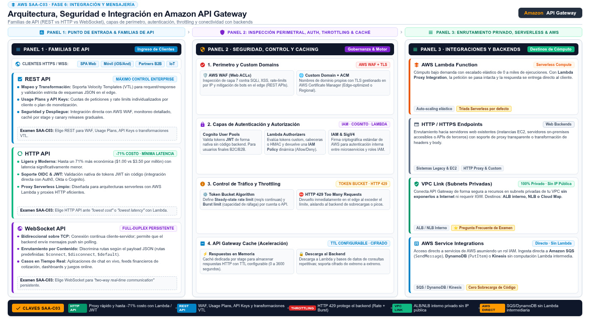

API Gateway Amazon API Gateway
La puerta pública del stack serverless: expón HTTPS hacia Lambda y otros backends, con throttling, autorizadores y stages gestionados.
Todo edificio con ocupantes valiosos necesita un portero: una única puerta vigilada donde se verifica la identidad, se limita el ritmo de entrada y se guía a cada visitante a su destino. Amazon API Gateway es ese portero para tus aplicaciones: un servicio gestionado para crear, publicar, mantener, monitorear y asegurar APIs REST, HTTP y WebSocket a cualquier escala — así lo resume la documentación oficial. Los clientes (web, móvil, terceros) hablan HTTPS con el gateway, y este enruta cada llamada a Lambda, a otros servicios de AWS o a un backend HTTP propio.
El examen lo enfoca como pieza del serverless: API Gateway + Lambda + DynamoDB es la tríada que aparece una y otra vez como la arquitectura de "minimum operational overhead, maximum scalability". Pero el servicio también protagoniza preguntas propias: qué tipo de API elegir (REST vs HTTP), cómo proteger el backend de ráfagas (throttling), cómo autenticar sin password propio (autorizadores de Cognito o Lambda) y cómo promover versiones (stages y deployments). Esta página cubre las cuatro decisiones, y remata con el ecosistema de frontend: AppSync para GraphQL y Amplify para hosting con CI/CD.

REST API, HTTP API y WebSocket API
API Gateway crea tres familias de API, y elegir bien es una pregunta de examen literal ("choose between REST APIs and HTTP APIs"). Las REST APIs son las completas: HTTP basado, comunicación cliente-servidor sin estado con métodos estándar (GET, POST, PUT, PATCH, DELETE), y el set entero de funciones del gateway — autorizadores, request validation, mapping de requests, API keys y usage plans, WAF integrable, monitoreo detallado. Las HTTP APIs son la versión ligera y moderna: diseñadas para el caso proxy (cliente → Lambda/backend HTTP), con menos funciones pero menor latencia y menor costo por request. Las WebSocket APIs mantienen conexiones con estado y full-duplex: el gateway enruta cada mensaje entrante según su contenido, lo que las hace ideales para chat, notificaciones en vivo y colaboración.
| Criterio | REST API | HTTP API | WebSocket API |
|---|---|---|---|
| Modelo | Sin estado, métodos HTTP estándar | Sin estado, proxy ligero | Con estado, full-duplex |
| Funciones | Completas: validación, mapping, usage plans, API keys | Las esenciales, menos perfiles de gestion | Rutas por contenido del mensaje |
| Costo y latencia | Mayores | Menores | Según mensajes y conexiones |
| Elegir cuando… | Necesitas control fino de request/response | Proxy simple a Lambda con costo mínimo | Comunicación bidireccional en vivo |
Throttling: proteger el backend de las ráfagas
Un endpoint público sin límites es una invitación al incidente: un cliente con un bug puede saturar tus Lambdas y tu factura. API Gateway aplica throttling en dos niveles: un límite a nivel de cuenta y límites por API, expresados como rate (peticiones sostenidas por segundo) y burst (pico permitido). Cuando el cliente supera el límite, recibe HTTP 429 Too Many Requests y tu backend ni se entera — la protección ocurre en el edge del gateway. Puedes además repartir cuotas por cliente con usage plans y API keys (más monitoreo con CloudWatch de las métricas de cada plan), el patrón clásico cuando vendes la API a terceros: plan gratuito con cuota pequeña, plan de pago con cuota mayor. La frase del enunciado que lo delata: "protect the backend from traffic spikes" o "limit the number of requests per client".
Autorizadores: Cognito o Lambda
La autenticación en API Gateway tiene dos caminos gestionados y la elección cae en el examen. El Cognito user pool authorizer delega la identidad a un user pool: los clientes se autentican contra Cognito (email/password, MFA, federación social o corporativa) y presentan el JWT token resultante; el gateway valida el token en cada llamada sin que escribas código de seguridad. El Lambda authorizer (antes "custom authorizer") es para lógica propia: una Lambda recibe el token, decide con tu código (contra tu propio IdP, una tabla de API keys, un algoritmo interno) y devuelve una política IAM que autoriza o niega la llamada — con opciones de autorizador de request (evalúa parámetros, headers, IP) o de token. En resumen: identidad gestionada por Cognito → Cognito authorizer; requisito exótico de autenticación → Lambda authorizer. Y en ningún caso: passwords o tokens validados dentro del código de tu Lambda de negocio, que es el anti-patrón distractor.
Stages y deployments: promover sin sustos
En API Gateway no basta con guardar la definición: una API solo existe para los clientes cuando la deploy a un stage — un entorno con su propia URL (p. ej. /dev y /prod), su throttling, sus logs y sus variables de stage para apuntar cada entorno a su backend (la Lambda de pruebas o la de producción). El flujo sano es el clásico: editas en beta, despliegas a beta, validas, promueves a prod. Para hacerlo azul-verde dentro del mismo stage existen los canary deployments: el stage redirige un porcentaje pequeño del tráfico a la nueva versión, observas métricas y errores, y al confirmar lanzas el 100%. Es la respuesta cuando el enunciado pide "release new API versions safely". Cada stage además reporta métricas a CloudWatch (latencia, conteo de llamadas, errores 4XX/5XX) por si el examen pregunta por observabilidad del API.
AppSync y Amplify: GraphQL y el frontend
El ecosistema completo la puerta de entrada tiene dos piezas complementarias. AWS AppSync es el servicio gestionado de GraphQL: un único endpoint GraphQL que accede a una o varias fuentes de datos, soporta combinar múltiples APIs GraphQL en una fusionada, publica actualizaciones en tiempo real (Pub/Sub), e incluye seguridad, monitoreo y caché opcional para baja latencia — con pago por request y por mensaje en tiempo real, según la documentación oficial. Cuando el cliente móvil/web necesita pedir exactamente los campos que quiere (y no el payload fijo de un REST), GraphQL vía AppSync es la respuesta. AWS Amplify es la otra pieza: hosting Git-based de aplicaciones web full-stack con despliegue continuo sobre la CDN global de AWS, soporte de frameworks SSR (Next.js, Nuxt), SPA (React, Angular, Vue) y generadores estáticos, ramas por entorno, previews de pull request, dominios propios y ramas protegidas por contraseña.
CI-CD y CDN"] AMP --> F["Frontend
React o Next.js"] F -->|"GraphQL"| APS["AppSync"] F -->|"REST"| APIG["API Gateway"] APS --> D["DynamoDB y
otras fuentes"] APIG --> L2["Lambda"] L2 --> D classDef navy fill:#EFF6FF,stroke:#3B82F6,stroke-width:2px,color:#1E293B classDef green fill:#F0FDF4,stroke:#10B981,stroke-width:2px,color:#1E293B classDef amber fill:#FFF7ED,stroke:#F59E0B,stroke-width:2px,color:#1E293B class GIT,AMP green class F navy class APS,APIG amber class D,L2 green
| Si el enunciado dice… | La respuesta apunta a… |
|---|---|
| "expose Lambda as HTTPS endpoint, serverless" | API Gateway (HTTP API si prioriza costo/latencia) |
| "prevent traffic spikes from overwhelming backend" | Throttling: rate + burst, 429 en el edge |
| "authenticate users with email and password, managed" | Cognito user pool authorizer |
| "third-party API key with different quotas" | Usage plans + API keys |
| "custom authentication logic from a legacy IdP" | Lambda authorizer |
| "client needs flexible queries of nested data" | AppSync (GraphQL) |
| "deploy web frontend from Git with CI/CD" | Amplify Hosting |
| "gradual rollout of a new API version" | Canary deployment en un stage |
- API Gateway = "front door" gestionada: crea, publica, asegura y monitorea APIs REST, HTTP y WebSocket.
- REST API = funciones completas; HTTP API = proxy ligero, menor costo y latencia; WebSocket = con estado y full-duplex.
- Throttling por rate/burst protege el backend (HTTP 429) y se refina por cliente con usage plans + API keys.
- Identidad gestionada → Cognito user pool authorizer (valida JWT); lógica propia → Lambda authorizer (devuelve política IAM).
- Una API existe al desplegarla a un stage; los canary deployments liberan versiones con tráfico gradual.
- AppSync para GraphQL con tiempo real; Amplify para hosting Git-based con CI/CD sobre CDN.
- Tríada serverless por defecto: API Gateway → Lambda → DynamoDB.
- NET-20 Amazon API Gateway — Developer Guide (Welcome) · docs.aws.amazon.com/apigateway/latest/developerguide/welcome.html
- INT-06 AWS AppSync — What is (managed GraphQL) · docs.aws.amazon.com/appsync/latest/devguide/what-is-appsync.html
- INT-08 AWS Amplify — Welcome (web/mobile hosting, CI/CD) · docs.aws.amazon.com/amplify/latest/userguide/welcome.html